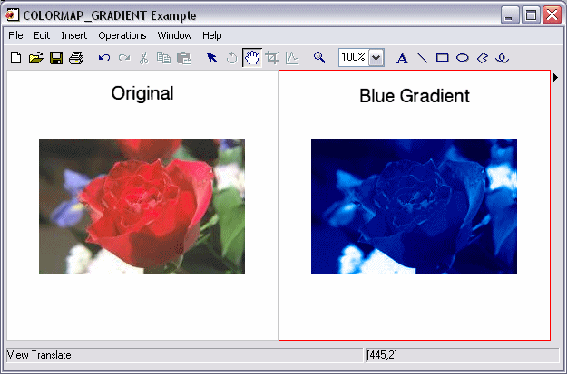

The COLORMAP_GRADIENT function maps an image into a specified luminance-based gradient. This function can be used to apply a “false” color to an image, based on image luminance levels.
Result = COLORMAP_GRADIENT( Image[ , Gradient] )
Result is a 3-channel byte array of the same width and height as Image .
A 2D or 3D array of any basic type containing the input image with range [0-255]. A 2D array is treated as a grayscale image. A 3D array must contain RGB image data and be of the form [3, m , n ].
An optional scalar integer or [3, 256] byte array. If not provided, Gradient maps the image to a grayscale gradient. If a scalar integer is provided, Gradient maps the image to a color table specified by the scalar integer (For more information, see LOADCT). If a [3, 256] byte array is provided, Gradient maps the image into the RGB color table stored in this array.
None
The following example maps an entire image into a blue gradient:
; Read a TrueColor image:
file = FILEPATH('rose.jpg', SUBDIRECTORY = ['examples', 'data'])
IOPEN, file, rose1
; map the image into a blue gradient:
rose2 = COLORMAP_GRADIENT(rose1, 1)
IIMAGE, rose1, VIEW_GRID=[2,1], VIEW_TITLE='Original', $
DIMENSIONS=[600,300], $
WINDOW_TITLE='COLORMAP_GRADIENT Example', /NO_SAVEPROMPT
IIMAGE, rose2, /VIEW_NEXT, VIEW_TITLE='Blue Gradient'
; Increase the text size
ISETPROPERTY, 'text*', FONT_SIZE=40
The resulting images appear as follows:
|
 |
|
6.4 |
Introduced |